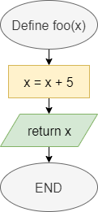
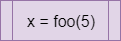

In Python, we can break our programs up into individual functions, which are individual routines that we can call in our code. Let’s review how to create functions in Python.
Functions in Flowcharts & Pseudocode
The table below lists the flowchart blocks used to represent functions, as well as the corresponding pseudocode:
| Operation | Flowchart | Pseudocode |
|---|---|---|
| Declare Function |  | |
| Call Function |  | |
Functions in Python
Declaring Functions
In general, a function definition in Python needs a few elements. Let’s start at the simplest case:
def foo():
print("Foo")
returnLet’s break this example function definition down to see how it works:
- First, we use the keyword
defat the beginning of this function definition. That keyword tells Python that we’d like to define a new function. We’ll need to include it at the beginning of each function definition. - Next, we have the name of the function,
foo. We can name a function using any valid identifier in Python. In general, function names in Python always start with a lowercase letter, and use underscores between the words in the function name if it contains multiple words. - Following the function name, we see a set of parentheses
()that list the parameters for this function. Since there is nothing included in this example, the functionfoodoes not require any parameters. - Finally, we see a colon
:indicating that the indented block of code below this definition is contained within the function. In this case, the function will simply printFooto the terminal. - The function ends with the
returnkeyword. Since we aren’t returning a value, we aren’t required to include areturnkeyword in the function. However, it is helpful to know that we may use that keyword to exit the function at any time.
Once that function is created, we can call it using the following code:
foo()Parameters and Return
In a more complex case, we can declare a function that accepts parameters and returns a value, as in this example:
def count_letters(input, letter):
output = 0
for i in range(0, len(input)):
if input[i] == letter:
output += 1
return outputIn this example, the function accepts two parameters: input, which could be a string, and letter, which could be a single character. However, since Python does not enforce a type on these parameters, they could actually be any value. We could add additional code to this function that checks the type of each parameter and raises a TypeError if they are not the expected type.
We can use the parameters just like any other variable in our code. To return a value, we use the return keyword, followed by the value or variable containing the value we’d like to return.
To call a function that requires parameters, we can include values as arguments in the parentheses of the function call:
sum += count_letters("The quick brown fox jumped over the lazy dog", "e")